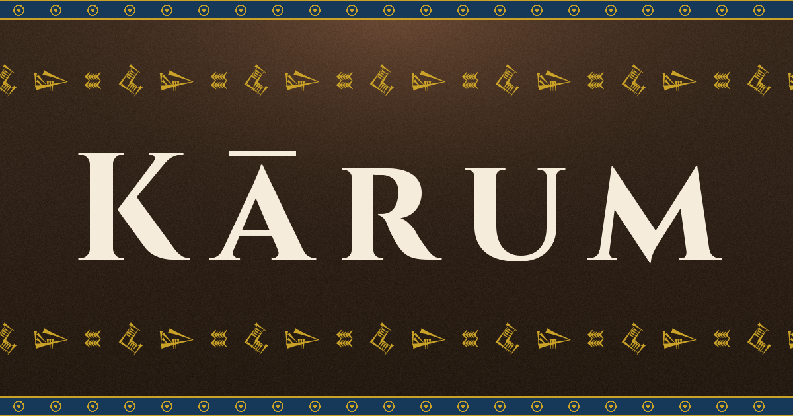

The Vision
Kārum is a materialist vision for grand strategy games. Every resource lives physically in the world: grain, metal, silver, and labor. There are no magic numbers, no war score or loyalty points, and no influence. Every action and consequence is an economic calculation driven by the distribution of material. The Kārum vision is that every grand strategy system--trade, diplomacy, war--can grow from a purely materialist base.
In Kārum, you do not play the benevolent steward of a city or the "spirit of a nation" moving through history. You play The Crown, one of the Three Estates jockeying for control of the Bronze Age. It is critical to maintain a private balance of power with The Temple and Private markets at home, but don't grow complacent to the threat of nearby cities.
The Unsolved Problems of Strategy Games
Strategy games have a rich history, yet there is no shortage of challenging unsolved problems. Kārum promises to address these problems through its materialist framework. Each of these problems, and Kārum's materialist solution, are outlined in the Kārum propositions.The Crown is incentivized to privative farmland to releases manpower for construction projects and war.
Each city has a labor pool $l$ that the crown taxes at a fraction of their time, $\alpha$. This corvee tax is $6$-$8$ weeks per year total, so $\alpha\approx 0.125$. Moving $y$ farmers from the corvee to the private labor pool yields,
Thus, each privatized worker frees up $(1-\alpha)$ workers for the crown; at the cost of relinquishing control over the grain supply.
Dominate a neighbor by generously trading with them.
When grain is expensive, traders will automatically flood a grain-rich neighbor with cheap textiles and buy up their cheap grain. Each trader has a total weight capacity $w$, and the total silver value is preserved via,
i.e., for a positive price difference the trader extracts a quantity of silver $s$. Thus, a specialized city producing high-value goods will automatically centralize all silver in the region.
Goods are transported physically in the world, on donkeys that consume the grain they carry.
Each donkey carries a bushel of goods with weight $w$ kg and must be fed $r$ kg of grain per day. This means, fully loaded with grain, the donkey can travel at most,
before eating their entire load, This puts a hard limit on how far goods can travel from any city or resupply point, enriching cities central to the trade network.
Soldiers are a resource sink fed directly from the player's stockpiles.
Militia are drawn from the ranks of the corvee levy and supplied with weapons and armor by the crown. This means that military excursions are strictly limited by logistics range and the crown's capability to move goods between cities. Active militia are also not farming or manufacturing, further straining the economy. The economic impact of militia-soldiers can be mitigated by hiring mercenaries, if the crown has sufficient silver to keep them paid.
How does a city extract silver from an equally strong neighbor?
When you win a battle, you get a one-time boost of material from looting. But how do you enforce tribute? As soon as your army returns home, the losing side can immediately stop sending tribute. We resolve this as a material problem; confiscating the defender's armaments leaves them defenseless, and ensures they won't be able to raise an army any time soon. Stationing soldiers in the defeated city's trade house ensures that the tribute will keep flowing, at the cost of actively maintaining them. This turns tribute extraction into a cost-benefit question for the attacker, and a combat feasibility question for the defender.
Diplomacy and conflict are driven by economic decisions, not opinion modifiers.
The flow of material defines the economic power of every state. Tariffs can protect your market and bring silver into your economy, at the expense of your neighbors and trade partners. This turns conflict into an economic question: Is the cost of supplying an army more or less than the value of opening up a trade route? What about the cost of seizing a neighbor's grain during a famine? Raiding a neighbor's tin supplies? This means economic calculus, not opinion modifiers, will drive AI behavior.